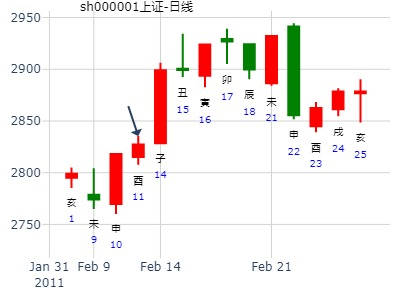
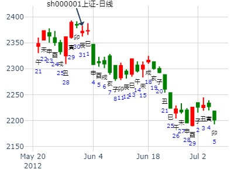
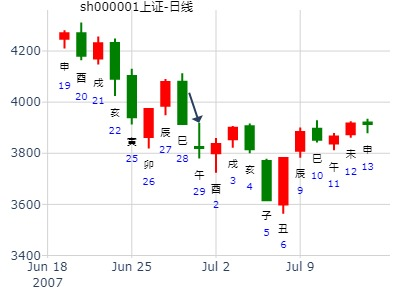

阿山版主，我用八卦年卦测大盘，虽说没有100%准确，但是80%以上是没问题的。比如2008年的年卦一下，有兴趣慢慢琢磨琢磨：——
占事：2008年大盘预测
起卦时间：2008年02月05日18时20分
干支：戊子年甲寅月乙亥日乙酉时 旬空：午未 子丑 申酉 午未
六神 伏神 艮宫：天泽履 兑宫：兑为泽（六冲）
玄武 ▅▅▅▅▅ 兄弟壬戌土 ○→ ▅▅ ▅▅ 兄弟丁未土 世
白虎 妻财丙子水 ▅▅▅▅▅ 子孙壬申金 世 ▅▅▅▅▅ 子孙丁酉金
滕蛇 ▅▅▅▅▅ 父母壬午火 ▅▅▅▅▅ 妻财丁亥水
勾陈 ▅▅ ▅▅ 兄弟丁丑土 ▅▅ ▅▅ 兄弟丁丑土 应
朱雀 ▅▅▅▅▅ 官鬼丁卯木 应 ▅▅▅▅▅ 官鬼丁卯木
青龙 ▅▅▅▅▅ 父母丁巳火 ▅▅▅▅▅ 父母丁巳火
主力月破,旬空!
2011股市大势仅次于2008的下跌。
年卦定性： 世爻月破旬空。
主帖标题: [大盘指数] 预测股市大盘未来趋势综合贴！
股龙：方式：手工指定
公历：2009年2月3日9时17分 星期二 北京时间2009年模拟曲线！
干支：戊子年 乙丑月 己卯日 己巳时
旬空：午未 戌亥 申酉 戌亥
天泽履 兑为泽(六冲)
六神 伏 神 【本 卦】 【变 卦】
勾陈 ▅▅▅▅▅ 兄弟戌土 ○→ ▅▅ ▅▅ 兄弟未土 世
朱雀 妻财子水 ▅▅▅▅▅ 子孙申金 世 ▅▅▅▅▅ 子孙酉金
青龙 ▅▅▅▅▅ 父母午火 ▅▅▅▅▅ 妻财亥水
玄武 ▅▅ ▅▅ 兄弟丑土 ▅▅ ▅▅ 兄弟丑土 应
白虎 ▅▅▅▅▅ 官鬼卯木 应 ▅▅▅▅▅ 官鬼卯木
螣蛇 ▅▅▅▅▅ 父母巳火 ▅▅▅▅▅ 父母巳火
主帖标题: 2月14-18日大盘涨跌卦
占事：2月14-18日大盘涨跌？
公历时间：2011年2月11日16时7分 星期五
干支：辛卯年 庚寅月 丁酉日 戊申时 (旬空：辰巳)
神煞：驿马—亥 桃花—午 日禄—午 贵人—酉，亥
艮宫：天泽履 兑宫：兑为泽（六冲）
六神 伏 神 【本 卦】 【变 卦】
青龙 ▅▅▅▅▅ 兄弟壬戌土 ○→ ▅▅ ▅▅ 兄弟丁未土 世
玄武 妻财丙子水 ▅▅▅▅▅ 子孙壬申金 世 ▅▅▅▅▅ 子孙丁酉金
白虎 ▅▅▅▅▅ 父母壬午火 ▅▅▅▅▅ 妻财丁亥水
螣蛇 ▅▅ ▅▅ 兄弟丁丑土 ▅▅ ▅▅ 兄弟丁丑土 应
勾陈 ▅▅▅▅▅ 官鬼丁卯木 应 ▅▅▅▅▅ 官鬼丁卯木
朱雀 ▅▅▅▅▅ 父母丁巳火 ▅▅▅▅▅ 父母丁巳火

下周沪市大盘走势 2012-2-4 15:09
辛卯年 辛丑月 乙未日 甲申时(旬空：辰巳)
艮宫：天泽履 兑宫：兑为泽（六冲）
[六神 伏 神 【本 卦】 【变 卦】
玄武 ▅▅▅▅▅ 兄弟戌土、 ○→ ▅▅ ▅▅ 兄弟未土、、世
白虎 伏妻财子水▅▅▅▅▅ 子孙申金、世 ▅▅▅▅▅ 子孙酉金、
螣蛇 ▅▅▅▅▅ 父母午火、 ▅▅▅▅▅ 妻财亥水、
勾陈 ▅▅ ▅▅ 兄弟丑土、、 ▅▅ ▅▅ 兄弟丑土、、应
朱雀 ▅▅▅▅▅ 官鬼卯木、应 ▅▅▅▅▅ 官鬼卯木、
青龙 ▅▅▅▅▅ 父母巳火、 ▅▅▅▅▅ 父母巳火、
上九：视履考祥，其旋元吉。象曰：元吉在上，大有庆也。
主帖标题: 上证3.01--3.05
出生：2021 年 性别：男 占事：没填
公历起卦时间：2021年2月26日14时49分 (手工指定)
干支：辛丑年 庚寅月 乙巳日 癸未时 （日空：寅卯）
艮宫：天泽履 兑宫：兑为泽 (六冲)
玄武 兄弟壬戌土 ▅▅▅▅▅ ○→ 兄弟丁未土 ▅▅ ▅▅ 世
白虎 妻财丙子水 子孙壬申金 ▅▅▅▅▅ 世 子孙丁酉金 ▅▅▅▅▅
螣蛇 父母壬午火 ▅▅▅▅▅ 妻财丁亥水 ▅▅▅▅▅
勾陈 兄弟丁丑土 ▅▅ ▅▅ 兄弟丁丑土 ▅▅ ▅▅ 应
朱雀 官鬼丁卯木 ▅▅▅▅▅ 应 官鬼丁卯木 ▅▅▅▅▅
青龙 父母丁巳火 ▅▅▅▅▅ 父母丁巳火 ▅▅▅▅▅
履之兑，兄化退戌化未。3月第4-5周。.md
时间: 2016-03-20 11时38分
干支: 丙申年辛卯月辛丑日 (旬空: 辰巳 )
天泽履 兑为泽
六神 伏神 本 卦 变 卦
腾蛇 ▅▅▅▅▅ 兄弟戌土 Ｏ→ ▅▅ ▅▅ 兄弟未土 世
勾陈 妻财子水▅▅▅▅▅ 子孙申金 世 ▅▅▅▅▅ 子孙酉金
朱雀 ▅▅▅▅▅ 父母午火 ▅▅▅▅▅ 妻财亥水
青龙 ▅▅ ▅▅ 兄弟丑土 ▅▅ ▅▅ 兄弟丑土 应
玄武 ▅▅▅▅▅ 官鬼卯木 应 ▅▅▅▅▅ 官鬼卯木
白虎 ▅▅▅▅▅ 父母巳火 ▅▅▅▅▅ 父母巳火
主帖标题: ★★★★★上证6.22-6.26日走势？
主帖标题: ★上证6.22-6.26日走势？
出生：2020 年 性别：男 占事：大盘3.30-4.3日走势？诸葛筛子卦
排卦：元亨利贞网六爻在线排盘系统 http://www.china95.net
公历起卦时间：2020年3月25日12时49分 (手工指定)
干支：庚子年 己卯月 丁卯日 丙午时 （日空：戌亥）
艮宫：天泽履 兑宫：兑为泽 (六冲)
青龙 兄弟壬戌土 ▅▅▅▅▅ ○→ 兄弟丁未土 ▅▅ ▅▅ 世
玄武 妻财丙子水 子孙壬申金 ▅▅▅▅▅ 世 子孙丁酉金 ▅▅▅▅▅
白虎 父母壬午火 ▅▅▅▅▅ 妻财丁亥水 ▅▅▅▅▅
螣蛇 兄弟丁丑土 ▅▅ ▅▅ 兄弟丁丑土 ▅▅ ▅▅ 应
勾陈 官鬼丁卯木 ▅▅▅▅▅ 应 官鬼丁卯木 ▅▅▅▅▅
朱雀 父母丁巳火 ▅▅▅▅▅ 父母丁巳火 ▅▅▅▅▅
主帖标题: [讨论]对老陈测股一卦看大盘未来的分析
上证股市大盘，未来各月走势？起卦方式：手动摇卦 周易天地
公历时间：2009年4月20日20时16分
干支：己丑年 戊辰月 乙未日 丙戌时
旬空：午未 戌亥 辰巳 午未
艮宫：天泽履 兑宫：兑为泽（六冲）
六神 伏 神 【本 卦】 【变 卦】
玄武 ▄▄▄▄▄ 兄弟壬戌土 O-> ▄▄ ▄▄ 兄弟丁未土 世
白虎 妻财丙子水 ▄▄▄▄▄ 子孙壬申金 世 ▄▄▄▄▄ 子孙丁酉金
螣蛇 ▄▄▄▄▄ 父母壬午火 ▄▄▄▄▄ 妻财丁亥水
勾陈 ▄▄ ▄▄ 兄弟丁丑土 ▄▄ ▄▄ 兄弟丁丑土 应
朱雀 ▄▄▄▄▄ 官鬼丁卯木 应 ▄▄▄▄▄ 官鬼丁卯木
青龙 ▄▄▄▄▄ 父母丁巳火 ▄▄▄▄▄ 父母丁巳火
sajia527:测2700点是a股历史上永远的铁底吗
占事：测2700点是a股历史上永远的铁底吗
公历起卦时间：2011年4月4日16时25分 (按农历时间起卦)
干支：辛卯年 辛卯月 己丑日 壬申时 （日空：午未）
艮宫：天泽履 兑宫：兑为泽 (六冲) <br>
勾陈 兄弟壬戌土 ▅▅▅▅▅ ○→ 兄弟丁未土 ▅▅ ▅▅ 世
朱雀 妻财丙子水 子孙壬申金 ▅▅▅▅▅ 世 子孙丁酉金 ▅▅▅▅▅
青龙 父母壬午火 ▅▅▅▅▅ 妻财丁亥水 ▅▅▅▅▅
玄武 兄弟丁丑土 ▅▅ ▅▅ 兄弟丁丑土 ▅▅ ▅▅ 应
白虎 官鬼丁卯木 ▅▅▅▅▅ 应 官鬼丁卯木 ▅▅▅▅▅
腾蛇 父母丁巳火 ▅▅▅▅▅ 父母丁巳火 ▅▅▅▅▅
兄弟发动化退化空。断：永远的铁底
王注：实际是当年的大顶。
（应是兄弟日扶，当旺不退，反论发动,空爻当天就冲实了） |
4月第3周大盘： 履之兑。兄化退戌化未
2017年4月16日15时40分 (按农历时间起卦) jk2029
干支：丁酉年 甲辰月 癸酉日 庚申时 （日空：戌亥）
艮宫：天泽履 兑宫：兑为泽 (六冲)
六神 伏神 本 卦 变 卦
白虎 兄弟壬戌土 ▅▅▅▅▅ ○→ 兄弟丁未土 ▅▅ ▅▅ 世
腾蛇 妻财丙子水 子孙壬申金 ▅▅▅▅▅ 世 子孙丁酉金 ▅▅▅▅▅
勾陈 父母壬午火 ▅▅▅▅▅ 妻财丁亥水 ▅▅▅▅▅
朱雀 兄弟丁丑土 ▅▅ ▅▅ 兄弟丁丑土 ▅▅ ▅▅ 应
青龙 官鬼丁卯木 ▅▅▅▅▅ 应 官鬼丁卯木 ▅▅▅▅▅
玄武 父母丁巳火 ▅▅▅▅▅ 父母丁巳火 ▅▅▅▅▅
主帖标题: 请易经高手解5月25日大盘涨跌卦!
占事：5月25日大盘涨跌? 公历时间：2007年5月24日15时26分 星期四
干支：丁亥年 乙巳月 戊午日 庚申时 (旬空：子丑)
艮宫：天泽履 兑宫：兑为泽
（六冲）六神 伏 神 【本 卦】 【变 卦】
朱雀 ▅▅▅▅▅ 兄弟壬戌土 ○→ ▅▅ ▅▅ 兄弟丁未土 世
青龙 妻财丙子水 ▅▅▅▅▅ 子孙壬申金 世 ▅▅▅▅▅ 子孙丁酉金
玄武 ▅▅▅▅▅ 父母壬午火 ▅▅▅▅▅ 妻财丁亥水
白虎 ▅▅ ▅▅ 兄弟丁丑土 ▅▅ ▅▅ 兄弟丁丑土 应
螣蛇 ▅▅▅▅▅ 官鬼丁卯木 应 ▅▅▅▅▅ 官鬼丁卯木
勾陈 ▅▅▅▅▅ 父母丁巳火 ▅▅▅▅▅ 父母丁巳火
主帖标题: 请问版主们22日紫金矿业行情如何？
公历时间：2009年5月21日16时50分 农历时间：己丑年 四月二十七日申时
干支：己丑年 己巳月 丙寅日 丙申时 旬空：午未 戌亥 戌亥 辰巳
艮宫：天泽履 兑宫：兑为泽（六冲）
青龙 ▄▄▄▄▄ 兄弟壬戌土 O-> ▄▄ ▄▄ 兄弟丁未土 世
玄武 妻财丙子水 ▄▄▄▄▄ 子孙壬申金 世 ▄▄▄▄▄ 子孙丁酉金
白虎 ▄▄▄▄▄ 父母壬午火 ▄▄▄▄▄ 妻财丁亥水
螣蛇 ▄▄ ▄▄ 兄弟丁丑土 ▄▄ ▄▄ 兄弟丁丑土 应
勾陈 ▄▄▄▄▄ 官鬼丁卯木 应 ▄▄▄▄▄ 官鬼丁卯木
朱雀 ▄▄▄▄▄ 父母丁巳火 ▄▄▄▄▄ 父母丁巳火
主帖标题: 2009年1--12月上证指数行情预测
26日紫金矿业行情如何？
公历时间：2009年5月25日16时8分 农历时间：己丑年 五月初二日申时
干支：己丑年 己巳月 庚午日 甲申时 旬空：午未 戌亥 戌亥 午未
神煞：驿马─申 桃花─卯 日禄─申 贵人─丑，未
艮宫：天泽履 兑宫：兑为泽（六冲）
螣蛇 ▄▄▄▄▄ 兄弟壬戌土 O-> ▄▄ ▄▄ 兄弟丁未土 世
勾陈 妻财丙子水 ▄▄▄▄▄ 子孙壬申金 世 ▄▄▄▄▄ 子孙丁酉金
朱雀 ▄▄▄▄▄ 父母壬午火 ▄▄▄▄▄ 妻财丁亥水
青龙 ▄▄ ▄▄ 兄弟丁丑土 ▄▄ ▄▄ 兄弟丁丑土 应
玄武 ▄▄▄▄▄ 官鬼丁卯木 应 ▄▄▄▄▄ 官鬼丁卯木
白虎 ▄▄▄▄▄ 父母丁巳火 ▄▄▄▄▄ 父母丁巳火
主帖标题: 2012年6月大盘涨跌卦
占事: 2012年6月大盘涨跌？
起卦方式：手工指定 周易天地www.64gua.com六爻线上排盘系统
公历时间：2012年5月31日16时43分
干支：壬辰年 乙巳月 壬辰日 戊申时 旬空：午未 寅卯 午未 寅卯
艮宫：天泽履 兑宫：兑为泽（六冲）
六神 伏 神 【本 卦】 【变 卦】
白虎 ▄▄▄▄▄ 兄弟壬戌土 O-> ▄▄ ▄▄ 兄弟丁未土 世
螣蛇 妻财丙子水 ▄▄▄▄▄ 子孙壬申金 世 ▄▄▄▄▄ 子孙丁酉金
勾陈 ▄▄▄▄▄ 父母壬午火 ▄▄▄▄▄ 妻财丁亥水
朱雀 ▄▄ ▄▄ 兄弟丁丑土 ▄▄ ▄▄ 兄弟丁丑土 应
青龙 ▄▄▄▄▄ 官鬼丁卯木 应 ▄▄▄▄▄ 官鬼丁卯木
玄武 ▄▄▄▄▄ 父母丁巳火 ▄▄▄▄▄ 父母丁巳火

主帖标题: [讨论]恒生指数探讨十五
起卦方式：手工指定 www.iqing.net 线上排盘系统公历时间：2006年6月26日0时11分 星期一农历时间：丙戌年六月初一子时干支：丙戌年 甲午月 丙戌日 戊子时 (旬空：午未)神煞：驿马—申 桃花—卯 日禄—巳 贵人—酉，亥 艮宫：天泽履 兑宫：兑为泽（六冲）六神 伏 神 【本 卦】 【变 卦】青龙 ▅▅▅▅▅ 兄弟壬戌土 ○→ ▅▅ ▅▅ 兄弟丁未土 世玄武 妻财丙子水 ▅▅▅▅▅ 子孙壬申金 世 ▅▅▅▅▅ 子孙丁酉金 白虎 ▅▅▅▅▅ 父母壬午火 ▅▅▅▅▅ 妻财丁亥水 螣蛇 ▅▅ ▅▅ 兄弟丁丑土 ▅▅ ▅▅ 兄弟丁丑土 应勾陈 ▅▅▅▅▅ 官鬼丁卯木 应 ▅▅▅▅▅ 官鬼丁卯木 朱雀 ▅▅▅▅▅ 父母丁巳火 ▅▅▅▅▅ 父母丁巳火
主帖标题: [原创]预测6月29日沪市大盘走向
出生年：年 性别：男
占事: 下午会涨吗起卦方式：硬币摇卦 周易天地六爻线上排盘系统
公历时间：2007年6月29日12时42分 农历时间：丁亥年 五月十五日午时
干支：丁亥年 丙午月 甲午日 庚午时 旬空：午未 寅卯 辰巳 戌亥 神煞：驿马─申 桃花─卯 日禄─寅 贵人─丑，未
艮宫：天泽履 兑宫：兑为泽（六冲）
六神 伏 神 【本 卦】 【变 卦】
玄武 ▄▄▄▄▄ 兄弟壬戌土 O-> ▄▄ ▄▄ 兄弟丁未土 世
白虎 妻财丙子水 ▄▄▄▄▄ 子孙壬申金 世 ▄▄▄▄▄ 子孙丁酉金
螣蛇 ▄▄▄▄▄ 父母壬午火 ▄▄▄▄▄ 妻财丁亥水
勾陈 ▄▄ ▄▄ 兄弟丁丑土 ▄▄ ▄▄ 兄弟丁丑土 应
朱雀 ▄▄▄▄▄ 官鬼丁卯木 应 ▄▄▄▄▄ 官鬼丁卯木
青龙 ▄▄▄▄▄ 父母丁巳火 ▄▄▄▄▄ 父母丁巳火

主帖标题: [原创]每日预测深沪两市大盘方向
下周沪指走势
公历时间：2008年6月6日16时40分 干支：戊子年 戊午月 丁丑日 戊申时 旬空：午未 子丑 申酉 寅卯 神煞：驿马─亥 桃花─午 日禄─午 贵人─酉，亥
艮宫：天泽履 兑宫：兑为泽（六冲）
六神 伏 神 【本 卦】 【变 卦】
青龙 ▄▄▄▄▄ 兄弟壬戌土 O-> ▄▄ ▄▄ 兄弟丁未土 世
玄武 妻财丙子水 ▄▄▄▄▄ 子孙壬申金 世 ▄▄▄▄▄ 子孙丁酉金
白虎 ▄▄▄▄▄ 父母壬午火 ▄▄▄▄▄ 妻财丁亥水
螣蛇 ▄▄ ▄▄ 兄弟丁丑土 ▄▄ ▄▄ 兄弟丁丑土 应
勾陈 ▄▄▄▄▄ 官鬼丁卯木 应 ▄▄▄▄▄ 官鬼丁卯木
朱雀 ▄▄▄▄▄ 父母丁巳火 ▄▄▄▄▄ 父母丁巳火
履之兑，兄化退。夬之大壮，上证走势看盘交流（2014年7月1日).md
起卦方式：手工指定 易经股市论坛 www.yijingstock.com 在线排盘系统
公历时间：2014年6月30日15时20分
干 支：甲午年 庚午月 壬申日 戊申时 旬 空：辰巳 戌亥 (戌亥) 寅卯
艮宫：天泽履 兑宫：兑为泽（六冲）
六神 伏 神 【本 卦】 【变 卦】
白虎 ▄▄▄▄▄ 兄弟壬戌土 O ▄▄ ▄▄ 兄弟丁未土 世
螣蛇 妻财丙子水 ▄▄▄▄▄ 子孙壬申金 世 ▄▄▄▄▄ 子孙丁酉金
勾陈 ▄▄▄▄▄ 父母壬午火 ▄▄▄▄▄ 妻财丁亥水
朱雀 ▄▄ ▄▄ 兄弟丁丑土 ▄▄ ▄▄ 兄弟丁丑土 应
青龙 ▄▄▄▄ 官鬼丁卯木 应 ▄▄▄▄▄ 官鬼丁卯木
玄武 ▄▄▄▄▄ 父母丁巳火 ▄▄▄▄▄ 父母丁巳火
上九：视履考祥，其旋元吉。
象曰：元吉在上，大有庆也。 |
“每日一卦测大盘”—— 2014年7月1日周二走势。
公历起卦时间：2014年6月30日20时38分
干支：甲午年 庚午月 壬申日 庚戌时 （日空：戌亥）
坤宫：泽天夬 坤宫：雷天大壮 (六冲)
六神 伏神 本 卦 变 卦
白虎 兄弟丁未土 ▅▅ ▅▅ 兄弟庚戌土 ▅▅ ▅▅
腾蛇 子孙丁酉金 ▅▅▅▅▅ 世 ○→ 子孙庚申金 ▅▅ ▅▅
勾陈 妻财丁亥水 ▅▅▅▅▅ 父母庚午火 ▅▅▅▅▅ 世
朱雀 兄弟甲辰土 ▅▅▅▅▅ 兄弟甲辰土 ▅▅▅▅▅
青龙 父母乙巳火 官鬼甲寅木 ▅▅▅▅▅ 应 官鬼甲寅木 ▅▅▅▅▅
玄武 妻财甲子水 ▅▅▅▅▅ 妻财甲子水 ▅▅▅▅▅ 应 |
值日旺而不退。仍看涨。
马后炮：虽值日，化退，则涨幅小。
主帖标题: 昆仑万雄
主帖标题: 昆仑万维
公历起卦时间：2020年6月23日15时12分 (按农历时间起卦)
干支：庚子年 壬午月 丁酉日 戊申时 （日空：辰巳）
神煞：驿马－亥 桃花－午 日禄－午 贵人－酉，亥
艮宫：天泽履 兑宫：兑为泽 (六冲)
六神 伏神 本 卦 变 卦
青龙 兄弟壬戌土 ▅▅▅▅▅ ○→ 兄弟丁未土 ▅▅ ▅▅ 世
玄武 妻财丙子水 子孙壬申金 ▅▅▅▅▅ 世 子孙丁酉金 ▅▅▅▅▅
白虎 父母壬午火 ▅▅▅▅▅ 妻财丁亥水 ▅▅▅▅▅
螣蛇 兄弟丁丑土 ▅▅ ▅▅ 兄弟丁丑土 ▅▅ ▅▅ 应
勾陈 官鬼丁卯木 ▅▅▅▅▅ 应 官鬼丁卯木 ▅▅▅▅▅
朱雀 父母丁巳火 ▅▅▅▅▅ 父母丁巳火 ▅▅▅▅▅
主帖标题: 000825本周如何-出生年：年 性别：女
占事: 000825本周如何?起卦方式：手动摇卦 周易天地六爻线上排盘系统
公历时间：2008年7月13日18时13分
干支：戊子年 己未月 甲寅日 癸酉时 旬空：午未 子丑 子丑 戌亥
艮宫：天泽履 兑宫：兑为泽（六冲）
玄武 ▄▄▄▄▄ 兄弟壬戌土 O-> ▄▄ ▄▄ 兄弟丁未土 世
白虎 妻财丙子水 ▄▄▄▄▄ 子孙壬申金 世 ▄▄▄▄▄ 子孙丁酉金
螣蛇 ▄▄▄▄▄ 父母壬午火 ▄▄▄▄▄ 妻财丁亥水
勾陈 ▄▄ ▄▄ 兄弟丁丑土 ▄▄ ▄▄ 兄弟丁丑土 应
朱雀 ▄▄▄▄▄ 官鬼丁卯木 应 ▄▄▄▄▄ 官鬼丁卯木
青龙 ▄▄▄▄▄ 父母丁巳火 ▄▄▄▄▄ 父母丁巳火
此卦总体上论的话，是小涨的。
主帖标题: 7月23-27日大盘涨跌卦
占事：7月23-27日大盘涨跌？
公历起卦时间：2012年7月20日16时38分 (手工指定)
干支：壬辰年 丁未月 壬午日 戊申时 （日空：申酉）
神煞：驿马－申 桃花－卯 日禄－亥 贵人－卯，巳
艮宫：天泽履 兑宫：兑为泽 (六冲)
白虎 兄弟壬戌土 ▅▅▅▅▅ ○→ 兄弟丁未土 ▅▅ ▅▅ 世
腾蛇 妻财丙子水 子孙壬申金 ▅▅▅▅▅ 世 子孙丁酉金 ▅▅▅▅▅
勾陈 父母壬午火 ▅▅▅▅▅ 妻财丁亥水 ▅▅▅▅▅
朱雀 兄弟丁丑土 ▅▅ ▅▅ 兄弟丁丑土 ▅▅ ▅▅ 应
青龙 官鬼丁卯木 ▅▅▅▅▅ 应 官鬼丁卯木 ▅▅▅▅▅
玄武 父母丁巳火 ▅▅▅▅▅ 父母丁巳火 ▅▅▅▅▅

占事：航天信周近期到7月25日走势？ 值月旺而不退，论发动。
起卦方式：手动摇卦 易经股市论坛 www.yijingstock.com 在线排盘系统
公历时间：2014年7月15日13时4分
干 支：甲午年 辛未月 丁亥日 丁未时 （午未空）
艮宫：天泽履 兑宫：兑为泽（六冲）
六神 伏 神 【本 卦】 【变 卦】
青龙 ▄▄▄▄▄ 兄弟壬戌土 O-> ▄▄ ▄▄ 兄弟丁未土 世
玄武 妻财丙子水 ▄▄▄▄▄ 子孙壬申金 世 ▄▄▄▄▄ 子孙丁酉金
白虎 ▄▄▄▄▄ 父母壬午火 ▄▄▄▄▄ 妻财丁亥水
螣蛇 ▄▄ ▄▄ 兄弟丁丑土 ▄▄ ▄▄ 兄弟丁丑土 应
勾陈 ▄▄▄▄▄ 官鬼丁卯木 应 ▄▄▄▄▄ 官鬼丁卯木
朱雀 ▄▄▄▄▄ 父母丁巳火 ▄▄▄▄▄ 父母丁巳火
定性，当旺不退，论发动。
子日涨。财爻出伏。（实际大跌，冲旬空父母午火冲实）
丑日冲实未土，怕是跌。寅冲申金暗动，涨。（世爻一冲一合，上下影线）
午日冲财爻子水日破，跌。
从戌日开跌，到第二旬的子日止跌。第一轮子日大跌，因为冲实了父母午火，易形成父兄同动。
丑日冲走退神，涨。
出生年：年 性别：男 占事: 沪市大盘一周走势预测（8.25-8.29）
起卦方式：手工指定 周易天地www.64gua.com六爻线上排盘系统
公历时间：2008年8月24日9时20分 农历时间：戊子年 七月二十四日巳时
干支：戊子年 庚申月 丙申日 癸巳时 旬空：午未 子丑 辰巳 午未
艮宫：天泽履 兑宫：兑为泽（六冲） 六神 伏 神 【本 卦】 【变 卦】
青龙 ▄▄▄▄▄ 兄弟壬戌土 O-> ▄▄ ▄▄ 兄弟丁未土 世
玄武 妻财丙子水 ▄▄▄▄▄ 子孙壬申金 世 ▄▄▄▄▄ 子孙丁酉金
白虎 ▄▄▄▄▄ 父母壬午火 ▄▄▄▄▄ 妻财丁亥水
螣蛇 ▄▄ ▄▄ 兄弟丁丑土 ▄▄ ▄▄ 兄弟丁丑土 应
勾陈 ▄▄▄▄▄ 官鬼丁卯木 应 ▄▄▄▄▄ 官鬼丁卯木
朱雀 ▄▄▄▄▄ 父母丁巳火 ▄▄▄▄▄ 父母丁巳火
本周整体下跌,周一大跌,周二仍跌,不过尾盘有所反弹,周三小跌,周四小涨,周五大跌.
风生水起 占事: 600152现价买入可否获利 赚钱
公历时间：2014年8月5日10时9分
干支：甲午年 辛未月 戊申日 丁巳时
旬空：辰巳 戌亥 寅卯 子丑
艮宫：天泽履 兑宫：兑为泽（六冲）
六神 伏 神 【本 卦】 【变 卦】
朱雀 ▄▄▄▄▄ 兄弟壬戌土 O-> ▄▄ ▄▄ 兄弟丁未土 世
青龙 妻财丙子水 ▄▄▄▄▄ 子孙壬申金 世 ▄▄▄▄▄ 子孙丁酉金
玄武 ▄▄▄▄▄ 父母壬午火 ▄▄▄▄▄ 妻财丁亥水
白虎 ▄▄ ▄▄ 兄弟丁丑土 ▄▄ ▄▄ 兄弟丁丑土 应
螣蛇 ▄▄▄▄▄ 官鬼丁卯木 应 ▄▄▄▄▄ 官鬼丁卯木
勾陈 ▄▄▄▄▄ 父母丁巳火 ▄▄▄▄▄ 父母丁巳火

履之兑，和而泰到9月底走势。大涨.md 手工指定
时间: 2019-08-19 18时38分
干支: 己亥年壬申月戊子日庚申时 (旬空: 午未 )
天泽履 兑为泽
朱雀 ▅▅▅▅▅ 兄弟戌土 Ｏ→ ▅▅ ▅▅ 兄弟未土 世
青龙 妻财子水▅▅▅▅▅ 子孙申金 世 ▅▅▅▅▅ 子孙酉金
玄武 ▅▅▅▅▅ 父母午火 ▅▅▅▅▅ 妻财亥水
白虎 ▅▅ ▅▅ 兄弟丑土 ▅▅ ▅▅ 兄弟丑土 应
腾蛇 ▅▅▅▅▅ 官鬼卯木 应 ▅▅▅▅▅ 官鬼卯木
勾陈 ▅▅▅▅▅ 父母巳火 ▅▅▅▅▅ 父母巳火
2019-08-19
2019山东黄金，履之兑。经典当旺不退。
时间: 2019-08-26 20时3分
干支: 己亥年壬申月乙未日 (旬空: 辰巳 )
天泽履 兑为泽
六神 伏神 本 卦 变 卦
玄武 ▅▅▅▅▅ 兄弟戌土 Ｏ→ ▅▅ ▅▅ 兄弟未土 世
白虎 妻财子水▅▅▅▅▅ 子孙申金 世 ▅▅▅▅▅ 子孙酉金
腾蛇 ▅▅▅▅▅ 父母午火 ▅▅▅▅▅ 妻财亥水
勾陈 ▅▅ ▅▅ 兄弟丑土 ▅▅ ▅▅ 兄弟丑土 应
朱雀 ▅▅▅▅▅ 官鬼卯木 应 ▅▅▅▅▅ 官鬼卯木
青龙 ▅▅▅▅▅ 父母巳火 ▅▅▅▅▅ 父母巳火

占事：宁波联合明天走势 悟道喜悦 公历时间：2014年9月29日14时42分
干 支：甲午年 癸酉月 癸卯日 己未时 (辰巳)
艮宫：天泽履 兑宫：兑为泽（六冲）
六神 伏 神 【本 卦】 【变 卦】
白虎 ▄▄▄▄▄ 兄弟壬戌土 O-> ▄▄ ▄▄ 兄弟丁未土 世
螣蛇 妻财丙子水 ▄▄▄▄▄ 子孙壬申金 世 ▄▄▄▄▄ 子孙丁酉金
勾陈 ▄▄▄▄▄ 父母壬午火 ▄▄▄▄▄ 妻财丁亥水
朱雀 ▄▄ ▄▄ 兄弟丁丑土 ▄▄ ▄▄ 兄弟丁丑土 应
青龙 ▄▄▄▄▄ 官鬼丁卯木 应 ▄▄▄▄▄ 官鬼丁卯木
玄武 ▄▄▄▄▄ 父母丁巳火 ▄▄▄▄▄ 父母丁巳火
辰冲化退的戌，小跌。（更大原因是墓子水）
子日出伏，大涨。丑冲化退的未土，又涨）
寅冲世跌。己合世涨。午日财爻日破大跌。
9.8-9.30大盘趋势 水易缘
公历：2015年9月1日13时16分，星期二。
干支：乙未年 甲申月 庚辰日 癸未时 (卦身：辰)
主变卦 天泽履(艮宫) 之 兑为泽(兑宫) [空亡:申、酉]
螣蛇 ▅▅▅▅▅○兄弟壬戌土 ▅▅ ▅▅ 兄弟丁未土 世
勾陈 妻财丙子水 ▅▅▅▅▅ 子孙壬申金 世 ▅▅▅▅▅ 子孙丁酉金
朱雀 ▅▅▅▅▅ 父母壬午火 ▅▅▅▅▅ 妻财丁亥水
青龙 ▅▅ ▅▅ 兄弟丁丑土 ▅▅ ▅▅ 兄弟丁丑土 应
玄武 ▅▅▅▅▅ 官鬼丁卯木 应 ▅▅▅▅▅ 官鬼丁卯木
白虎 ▅▅▅▅▅ 父母丁巳火 ▅▅▅▅▅ 父母丁巳火
风生水起 占事：大盘酉月
起卦方式：手动摇卦 易经股市论坛 www.yijingstock.com 在线排盘系统
公历时间：2015年9月8日8时43分
干 支：乙未年 乙酉月 丁亥日 甲辰时
旬 空：辰巳 午未 (午未) 寅卯
兑宫：雷山小过（游魂） 乾宫：天风姤
六神 伏 神 【本 卦】 【变 卦】
青龙 ▄▄ ▄▄ 父母庚戌土 X-> ▄▄▄▄▄ 父母壬戌土
玄武 ▄▄ ▄▄ 兄弟庚申金 X-> ▄▄▄▄▄ 兄弟壬申金
白虎 子孙丁亥水 ▄▄▄▄▄ 官鬼庚午火 世 ▄▄▄▄▄ 官鬼壬午火 应
螣蛇 ▄▄▄▄▄ 兄弟丙申金 ▄▄▄▄▄ 兄弟辛酉金
勾陈 妻财丁卯木 ▄▄ ▄▄ 官鬼丙午火 X-> ▄▄▄▄▄ 子孙辛亥水
朱雀 ▄▄ ▄▄ 父母丙辰土 应 ▄▄ ▄▄ 父母辛丑土 世
学徒钟点工
求测事情：公历9月份股市涨跌 公历：2015-08-28 12:01
乙未年甲申月丙子日甲午时
艮(艮宫 ) 地水师(坎宫 )
世▄▄▄▄▄丙寅木官鬼 青龙 ○─→应▄▄ ▄▄癸酉金子孙
▄▄ ▄▄丙子水妻财 玄武 ▄▄ ▄▄癸亥水妻财
▄▄ ▄▄丙戌土兄弟 白虎 ▄▄ ▄▄癸丑土兄弟
应▄▄▄▄▄丙申金子孙 滕蛇 ○─→世▄▄ ▄▄戊午火父母
▄▄ ▄▄丙午火父母 勾陈 ×─→ ▄▄▄▄▄戊辰土兄弟
▄▄ ▄▄丙辰土兄弟 朱雀 ▄▄ ▄▄戊寅木官鬼
占事：上证9.21--9.30走势
公历起卦时间：2015年9月18日11时3分 (手工指定)
干支：乙未年 乙酉月 丁酉日 丙午时 （日空：辰巳）
艮宫：天泽履 兑宫：兑为泽 (六冲)
六神 伏神 本 卦 变 卦
青龙 兄弟壬戌土 ▅▅▅▅▅ ○→ 兄弟丁未土 ▅▅ ▅▅ 世
玄武 妻财丙子水 子孙壬申金 ▅▅▅▅▅ 世 子孙丁酉金 ▅▅▅▅▅
白虎 父母壬午火 ▅▅▅▅▅ 妻财丁亥水 ▅▅▅▅▅
腾蛇 兄弟丁丑土 ▅▅ ▅▅ 兄弟丁丑土 ▅▅ ▅▅ 应
勾陈 官鬼丁卯木 ▅▅▅▅▅ 应 官鬼丁卯木 ▅▅▅▅▅
朱雀 父母丁巳火 ▅▅▅▅▅ 父母丁巳火 ▅▅▅▅▅

主帖标题: 酉月趋势
求测人：某人，男，辛亥(1971年)，电脑摇卦(起卦方式)
占问事宜：9.8-9.30大盘趋势
公历：2015年9月1日13时16分，星期二。
干支：乙未年 甲申月 庚辰日 癸未时 (卦身：辰)
主变卦 天泽履(艮宫) 之 兑为泽(兑宫) [空亡:申、酉]
螣蛇 ▅▅▅▅▅○兄弟壬戌土 ▅▅ ▅▅ 兄弟丁未土 世
勾陈 妻财丙子水 ▅▅▅▅▅ 子孙壬申金 世 ▅▅▅▅▅ 子孙丁酉金
朱雀 ▅▅▅▅▅ 父母壬午火 ▅▅▅▅▅ 妻财丁亥水
青龙 ▅▅ ▅▅ 兄弟丁丑土 ▅▅ ▅▅ 兄弟丁丑土 应
玄武 ▅▅▅▅▅ 官鬼丁卯木 应 ▅▅▅▅▅ 官鬼丁卯木
白虎 ▅▅▅▅▅ 父母丁巳火 ▅▅▅▅▅ 父母 丁巳火
天命金融投资吗？
时间: 2018-09-09
干支: 戊戌年辛酉月甲辰日 (旬空: 寅卯 )
天泽履 兑为泽
六神 伏神 本 卦 变 卦
玄武 ▅▅▅▅▅ 兄弟戌土 Ｏ→ ▅▅ ▅▅ 兄弟未土 世
白虎 妻财子水▅▅▅▅▅ 子孙申金 世 ▅▅▅▅▅ 子孙酉金
腾蛇 ▅▅▅▅▅ 父母午火 ▅▅▅▅▅ 妻财亥水
勾陈 ▅▅ ▅▅ 兄弟丑土 ▅▅ ▅▅ 兄弟丑土 应
朱雀 ▅▅▅▅▅ 官鬼卯木 应 ▅▅▅▅▅ 官鬼卯木
青龙 ▅▅▅▅▅ 父母巳火 ▅▅▅▅▅ 父母巳火
占事：10月16日上证指数趋势
公历起卦时间：2009年10月15日16时4分 (报单数起卦-动爻加时辰)
干支：己丑年 甲戌月 癸巳日 庚申时 （日空：午未）
艮宫：天泽履 兑宫：兑为泽 (六冲)
六神 伏神 本 卦 变 卦
白虎 兄弟壬戌土 ▅▅▅▅▅ ○→ 兄弟丁未土 ▅▅ ▅▅ 世
腾蛇 妻财丙子水 子孙壬申金 ▅▅▅▅▅ 世 子孙丁酉金 ▅▅▅▅▅
勾陈 父母壬午火 ▅▅▅▅▅ 妻财丁亥水 ▅▅▅▅▅
朱雀 兄弟丁丑土 ▅▅ ▅▅ 兄弟丁丑土 ▅▅ ▅▅ 应
青龙 官鬼丁卯木 ▅▅▅▅▅ 应 官鬼丁卯木 ▅▅▅▅▅
玄武 父母丁巳火 ▅▅▅▅▅ 父母丁巳火 ▅▅▅▅▅
子孙持世，兄弟化退，卦变六冲，小阴小阳
公历起卦时间：2009年10月23日20时56分 (手工指定)
干支：己丑年 甲戌月 辛丑日 戊戌时 （日空：辰巳）
预测23日沪指趋势 （元亨利贞的晨星）
艮宫：天泽履 兑宫：兑为泽 (六冲)
腾蛇 兄弟壬戌土 ▅▅▅▅▅ ○→ 兄弟丁未土 ▅▅ ▅▅ 世
勾陈 妻财丙子水 子孙壬申金 ▅▅▅▅▅ 世 子孙丁酉金 ▅▅▅▅▅
朱雀 父母壬午火 ▅▅▅▅▅ 妻财丁亥水 ▅▅▅▅▅
青龙 兄弟丁丑土 ▅▅ ▅▅ 兄弟丁丑土 ▅▅ ▅▅ 应
玄武 官鬼丁卯木 ▅▅▅▅▅ 应 官鬼丁卯木 ▅▅▅▅▅
白虎 父母丁巳火 ▅▅▅▅▅ 父母丁巳火 ▅▅▅▅▅
兄动化退,收阳. 大涨，盘中杀回也深，最终中阳。
软通动力何时到400元-by金玉堂人工指定
时间: 2024-10-26
干支: 甲辰年甲戌月癸亥日 (旬空: 子丑 )
天泽履 兑为泽
六神 伏神 本 卦 变 卦
白虎 ▅▅▅▅▅ 兄弟戌土 Ｏ→ ▅▅ ▅▅ 兄弟未土 世
腾蛇 妻财子水▅▅▅▅▅ 子孙申金 世 ▅▅▅▅▅ 子孙酉金
勾陈 ▅▅▅▅▅ 父母午火 ▅▅▅▅▅ 妻财亥水
朱雀 ▅▅ ▅▅ 兄弟丑土 ▅▅ ▅▅ 兄弟丑土 应
青龙 ▅▅▅▅▅ 官鬼卯木 应 ▅▅▅▅▅ 官鬼卯木
玄武 ▅▅▅▅▅ 父母巳火 ▅▅▅▅▅ 父母巳火
占事：11月2日大盘涨跌
起卦方式：手动摇卦
公历时间：2015年11月1日23时16分
干 支：乙未年 丙戌月 壬午日 庚子时
旬 空：辰巳 午未 (申酉) 辰巳
艮宫：天泽履 兑宫：兑为泽（六冲）
六神 伏 神 【本 卦】 【变 卦】
白虎 ▄▄▄▄▄ 兄弟壬戌土 O-> ▄▄ ▄▄ 兄弟丁未土 世
螣蛇 妻财丙子水 ▄▄▄▄▄ 子孙壬申金 世 ▄▄▄▄▄ 子孙丁酉金
勾陈 ▄▄▄▄▄ 父母壬午火 ▄▄▄▄▄ 妻财丁亥水
朱雀 ▄▄ ▄▄ 兄弟丁丑土 ▄▄ ▄▄ 兄弟丁丑土 应
青龙 ▄▄▄▄▄ 官鬼丁卯木 应 ▄▄▄▄▄ 官鬼丁卯木
玄武 ▄▄▄▄▄ 父母丁巳火 ▄▄▄▄▄ 父母丁巳火
主帖标题: 12月6-10日大盘涨跌卦
占事：12月6-10日大盘涨跌？
公历时间：2010年12月3日16时43分 星期五
干支：庚寅年 丁亥月 丁亥日 戊申时 (旬空：午未)
神煞：驿马—巳 桃花—子 日禄—午 贵人—酉，亥
艮宫：天泽履 兑宫：兑为泽（六冲）
六神 伏 神 【本 卦】 【变 卦】
青龙 ▅▅▅▅▅ 兄弟壬戌土 ○→ ▅▅ ▅▅ 兄弟丁未土 世
玄武 妻财丙子水 ▅▅▅▅▅ 子孙壬申金 世 ▅▅▅▅▅ 子孙丁酉金
白虎 ▅▅▅▅▅ 父母壬午火 ▅▅▅▅▅ 妻财丁亥水
螣蛇 ▅▅ ▅▅ 兄弟丁丑土 ▅▅ ▅▅ 兄弟丁丑土 应
勾陈 ▅▅▅▅▅ 官鬼丁卯木 应 ▅▅▅▅▅ 官鬼丁卯木
朱雀 ▅▅▅▅▅ 父母丁巳火 ▅▅▅▅▅ 父母丁巳火
上证50春节前近一个月走势。履之兑。.md
时间: 2018-12-20
干支: 戊戌年甲子月丙戌日 (旬空: 午未 )
天泽履 兑为泽
六神 伏神 本 卦 变 卦
青龙 ▅▅▅▅▅ 兄弟戌土 Ｏ→ ▅▅ ▅▅ 兄弟未土 世
玄武 妻财子水▅▅▅▅▅ 子孙申金 世 ▅▅▅▅▅ 子孙酉金
白虎 ▅▅▅▅▅ 父母午火 ▅▅▅▅▅ 妻财亥水
腾蛇 ▅▅ ▅▅ 兄弟丑土 ▅▅ ▅▅ 兄弟丑土 应
勾陈 ▅▅▅▅▅ 官鬼卯木 应 ▅▅▅▅▅ 官鬼卯木
朱雀 ▅▅▅▅▅ 父母巳火 ▅▅▅▅▅ 父母巳火
丑月丑日，一冲就涨。